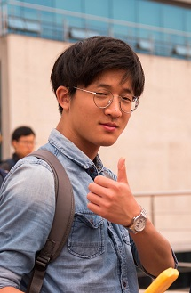
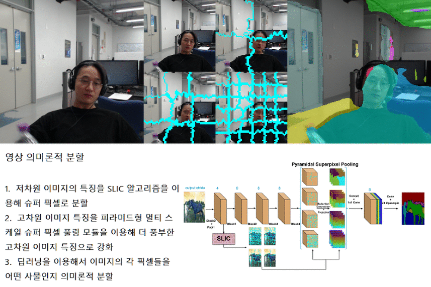
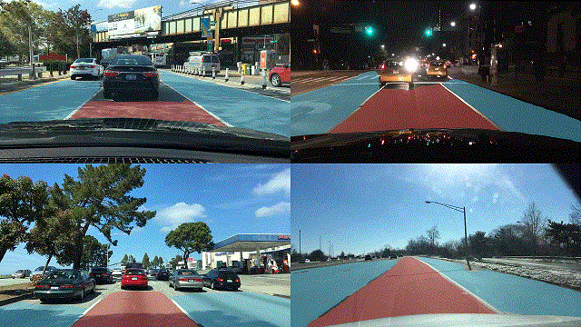
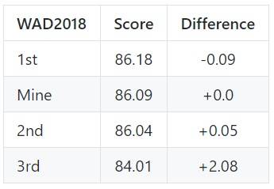
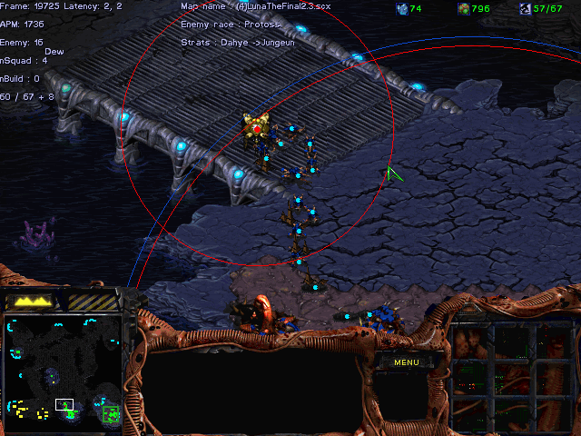
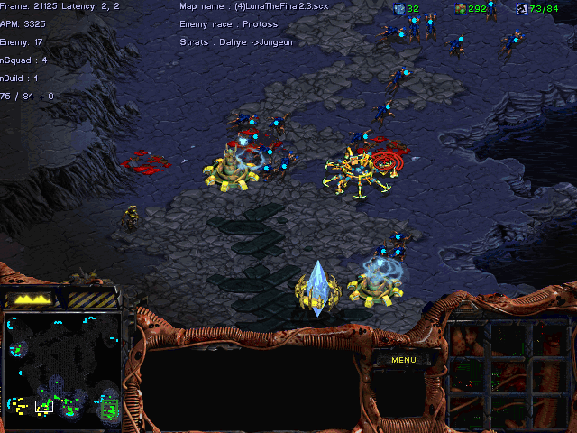
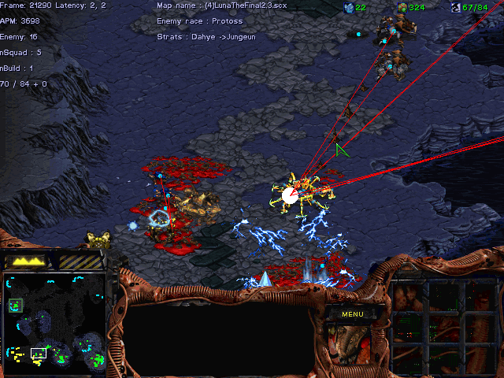
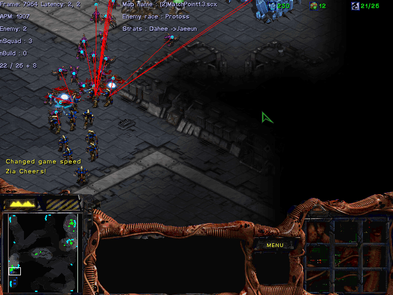

Sungguk Cha

Graduate Student
Dept. of Computer Science and Engineering
Ulsan National Institute of Science and Technology
Ulsan, Sounth Korea
[github]
[linkedin]
[e-Mail]
Biography
I am a graudate student in Ulsan National Institute of Science and Technology (UNIST), supervised by Prof. Jaesik Choi. Before that, I received the B.E. degree in "Computer Science and Engineering" and "Electrical Engineering" from UNIST in 2019.
My research interest includes computer vision, deep learning and machine learning.
Projects
I built up a deep learning environment for Ubuntu. Using a web camera with opencv and ADE20k trained SP-PSPNet, I implemented realtime semantic segmentation demo for the exhibtion.


▶ CVPR2018/Workshop on Autonomous Driving
▷ Drivable Area Segmentation (July 2018 ~ )


[github][github2]
▶ Kaggle: Google Analytics Customer Revenue Prediction (570/3611(Top 16%))(Nov 2018)
▶ Kaggle: Human Protein Atlas Image Classification (1053/2172(Top 49%))(Oct 2018)
▶ Kaggle: Avito Demand Prediction Challenge (1118/1873(Top 60%))(June 2018)
▶ StarCraft:Broodwar AI (Apr 2016 ~ Feb 2017)
   
▷ Strategy development report
▷ Ziabot(Zerg)
▷ Sungguk Cha(Terran)
Honors & Awards
Experiences
Skills
Teaching